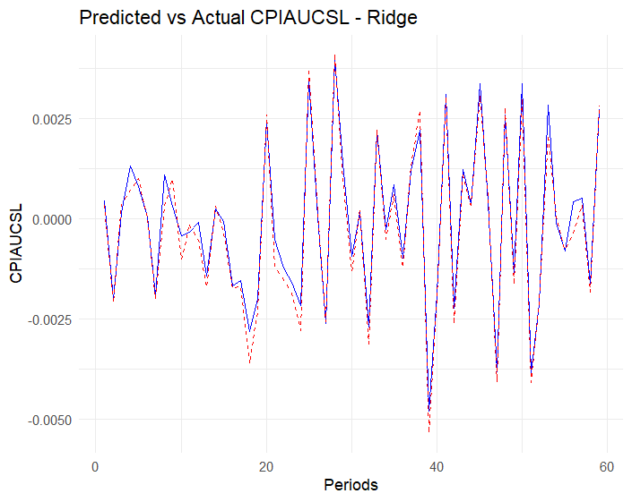
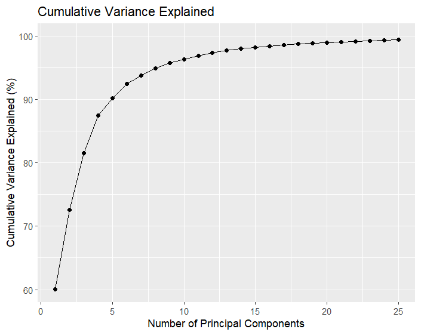

A study of various methods for handling high-dimensional data in economic forecasting.
We explore techniques like Principal Components, LASSO, and Ridge Regression.
Ridge Regression Results
Ridge regression helps handle multicollinearity by adding a penalty term to the regression.
This plot shows the coefficient paths as the penalty parameter changes.

Principal Components Analysis
The cumulative variance explained by principal components shows how much information
we can capture with a reduced number of features.

LASSO Variable Selection
LASSO performs both regularization and variable selection. This plot shows how
coefficients are shrunk to exactly zero as the penalty increases.